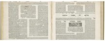

0144 Marcionism - Marcion believes Jesus is the savior sent by God, and Paul is his chief apostle, but he rejects the Hebrew Bible and God of the Old Testament as a tyrant or demiurge. Marcionists believe that the God of the Old Testament is a separate and lower entity than the all-forgiving God of the New Testament. This belief is similar to Gnostic theology - both are dualistic, that is, they posit (Manichaean) opposing gods, forces, or principles: one higher, spiritual, and "good," and the other lower, material, and "evil." This dualism stands in contrast to other Christian and Jewish views that "evil" has no independent existence, being merely an absence of "good." Marcion’s canon consists of eleven books: an abridged Gospel of Luke and ten Pauline epistles. The premise of Marcionism is that many of the teachings of Jesus are incompatible with the actions of the Hebrew God. He further regards the arguments of Paul regarding law and gospel, wrath and grace, works and faith, flesh and spirit, sin and righteousness, death and life, as the essence of religious truth. Marcionites hold that the God of the Hebrew Bible (known to Gnostics as Yaltabaoth) is inconsistent, jealous, wrathful and genocidal, and that the material world he created is defective, a place of suffering; the God who made such a world is a bungling or malicious demiurge. Marcionism shows the influence of Hellenistic philosophy on Christianity, by presenting a moral critique of the Old Testament from the standpoint of Platonism. According to Harnack, the sect may have led other Christians to introduce a formal statement of beliefs into their liturgy and to formulate a canon of authoritative Scripture of their own, thus eventually producing the current canon of the New Testament.
0150 Justin Martyr (c. 150 CE) As proof of the existence of the gospels prior to the end of the second century, it is claimed that Church father Justin Martyr included 268 "quotations of the New Testament" in his First Apology (cf. New Evidence that Demands a Verdict by Josh McDowell).
0180 Irenaeus (fl. 180 CE) "Father of the Catholic Canon." The four canonical gospels were not mentioned or named as such by anyone until the time of Church Father Irenaeus, Bishop of Lyons. In Against All Heresies (III, 11.8), Irenaeus is the first to name the canonical gospels and give reasons for their inclusion in the New Testament.
0180 Theophilus (Luke’s Theophilus?), Bishop of Antioch (Luke’s home town), is the first Church father clearly to discuss the canonical gospels.

0200 The Mishna, a rabbinical guidebook, is compiled by Nasi Judah the Patriarch; later, the Talmud (ancient rabbinic writings) is written: one in Babylon (more popular), and one in Jerusalem, as a commentary on the Mishna.
0200 Docetism (Marcionism) - Docetists maintain that Jesus’ human form is an illusion, as testified by the uncanonical Gospel of Peter. This system of beliefs is condemned by Polycarp and Serapion.
0220 Sabellianism - God the Father, Jesus Christ, and the Holy Spirit are three different modes or aspects of one monadic God, as perceived by the believer, rather than three distinct persons within the Godhead - that there are no real or substantial differences between the three, such that there is no substantial identity for the Spirit or the Son. At the Arroyo Seco World Wide Camp Meeting, near Los Angeles, in 1913, Canadian evangelist R.E. McAlister states at a baptismal service that the apostles baptized in the name of Jesus only and not in the triune Name of Father, Son, and Holy Spirit (Sabellianism is not dead!).
~~~~~~~~